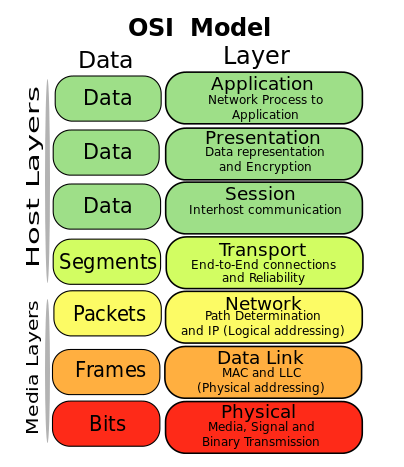

U13 <<
Previous Next >> IPv4 Addressing
IPv4 and IPv6 Addresses
Overview
In this lesson, we will discuss TCP/IP, and the two common types of Internet addressing: Internet protocol version 4 (IPv4) and Internet protocol version 6 (IPv6). We will discuss IPv4 in depth, as it is still the most dominant version in use in our networks. Then, we will cover the specifics of IPv6, differences between IPv4 and IPv6, and the reason we are moving toward IPv6 in the future.
總覽
在本課程中，我們將討論TCP / IP以及Internet尋址的兩種常見類型：Internet協議版本4（IPv4）和Internet協議版本6（IPv6）。 我們將深入討論IPv4，因為它仍然是我們網絡中使用的最主要版本。 然後，我們將介紹IPv6的細節，IPv4與IPv6之間的差異以及未來轉向IPv6的原因。
TCP/IP
Computer networks — including the Internet, which is the largest computer network — use Transmission Control Protocol/Internet Protocol or TCP/IP for network communications both internally on a LAN/WAN and externally to the Internet.
TCP/IP provides end-to-end connectivity of data. TCP/IP specifies how data should be grouped, addressed, transmitted, routed, and received at the destination address. The TCP/IP model, along with many of its protocols, is maintained and managed by the IETF (Internet Engineering Task Force).
TCP/IP is one of two sets of protocols that collectively operate in the transport and network layers of the OSI model.
計算機網路（包括作為最大計算機網路的Internet）使用傳輸控制協議/ Internet協議或TCP / IP進行內部LAN / WAN上和外部Internet的網路通信。
TCP / IP提供數據的端到端連接。 TCP / IP指定如何在目標地址處對數據進行分組，尋址，傳輸，路由和接收。 TCP / IP模型及其許多協議由IETF（Internet工程任務組）維護和管理。
TCP / IP是在OSI模型的傳輸層和網絡層中共同運行的兩組協議之一。

OSI Model. Image used under CC-BY-SA license from Wikimedia Commons.
In addition to creating message segments and ensuring connectivity, some of the basic characteristics of the IP protocol ensure that datagrams are routed to the correct destination using a binary addressing scheme. While the process of how the IP addresses are derived from binary (and hexadecimal relationships) is not covered in this course, it is important to know that just as computer CPUs use binary numbers to process data, networking hardware and protocols do so as well.
除了創建訊息段並確保連接性之外，IP協議的某些基本特徵還可以確保使用二進制尋址找方案將數據路由到正確的目的地。 儘管本課程未涵蓋如何從二進制（和十六進制關係）派生IP地址的過程，但重要的是要知道，就像計算機CPU使用二進制數來處理數據一樣，網絡硬體和網路傳輸協定也是如此。
IPv4 and IPv6 Addresses
Network devices require a logical address — either an IPv4 or IPv6 address (see the network layer in the diagram above) — when moving data from one network segment to another. As we discussed in previous modules, switches make their intelligent switching decisions (see the data link layer in the diagram above based on media access control (MAC) addresses. The MAC address, also known as the physical address, is the unique identifier hard coded on a network interface card by the manufacturer. Switches use these MAC addresses to identify which devices are on which switch ports, and forward traffic within the network segment to the correct ports based on these addresses. When data traffic needs to cross the boundaries of the network, it requires a logical address that the router can use to make intelligent routing decisions. In most modern networks, this is done by using TCP/IP addressing. Historically, other protocols existed, such as internetwork packet exchange/sequenced packet exchange (IPX/SPX) for Novell networks, AppleTalk, and NetBEUI for Microsoft networks. TCP/IP replaced these protocols almost exclusively due to its robust nature, reliability, and availability.
While the majority of our networks today still use IPv4, many networks are migrating to the newer IPv6 addressing standards. Additionally, many networks are offering dual support to both IPv4 and IPv6 during the transition. The reason for this transition is that we were running out of valid IPv4 addresses. IPv4 uses a 32-bit addressing scheme, providing only 4.2 billion available addresses, but IPv6 uses a 128-bit addressing scheme. IPv6 allows for 2128addresses, or 340,282,366,920,938,000,000,000,000,000,000,000,000 (3.4 x 1038) unique IP addresses. IPv6 allows for more IP addresses than humanity could ever utilize. At least that is what we think right now.
IPv4和IPv6地址
將數據從一個網段移動到另一個網段時，網絡設備需要邏輯地址-IPv4或IPv6地址（請參見上圖中的網絡層）。正如我們在之前的模塊中討論的那樣，交換機做出明智的交換決策（請參見上圖中的數據鏈路層，基於媒體訪問控制（MAC）地址。MAC地址，也稱為物理地址，是唯一的硬編碼標識符）交換機使用這些MAC地址來識別哪些設備在哪個交換機端口上，然後根據這些地址將網段內的流量轉發到正確的端口。在網絡中，它需要路由器可以用來做出智能路由決定的邏輯地址。在大多數現代網絡中，這是通過使用TCP / IP尋址來完成的。 / SPX）（用於Novell網絡），AppleTalk和用於Microsoft網絡的NetBEUI。TCP/ IP幾乎完全由於其魯棒性，可靠性和可用性而取代了這些協議。不可靠。
儘管當今我們的大多數網絡仍使用IPv4，但許多網絡正在遷移到更新的IPv6尋址標準。此外，在過渡期間，許多網絡都對IPv4和IPv6提供雙重支持。進行此轉換的原因是我們用盡了有效的IPv4地址。 IPv4使用32位尋址方案，僅提供42億個可用地址，而IPv6使用128位尋址方案。 IPv6允許2128個地址或340,282,366,920,938,000,000,000,000,000,000,000,000,000,000（3.4 x 1038）個唯一IP地址。 IPv6所允許的IP地址比人類所能利用的更多。至少這就是我們現在的想法。
U13 <<
Previous Next >> IPv4 Addressing